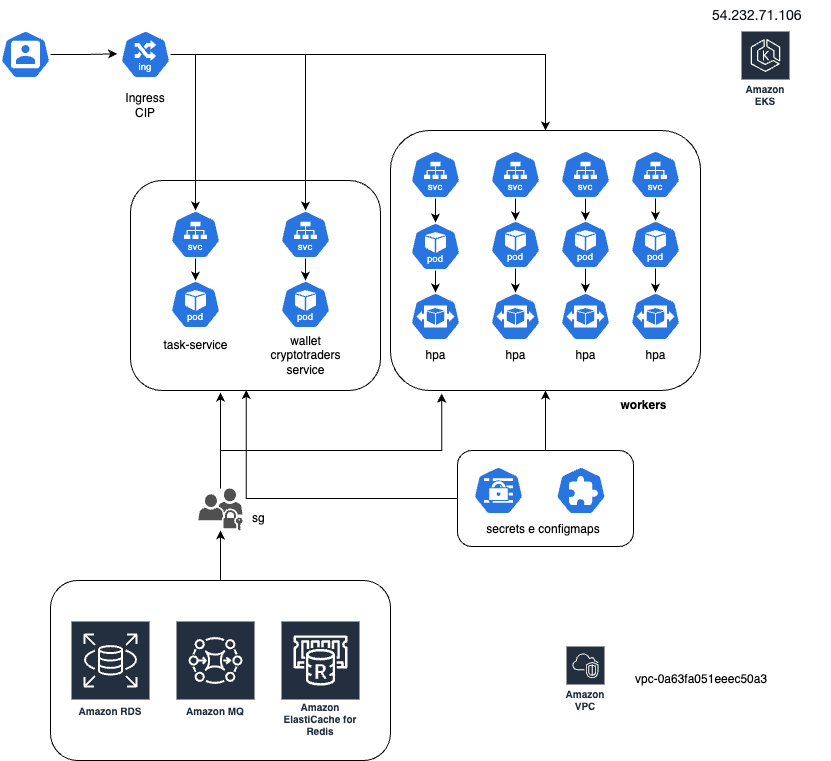

Documentação do Cluster Kubernetes Financial-Move Tech
Visão Geral
O cluster Kubernetes da financial-move tech está hospedado no Amazon EKS (Elastic Kubernetes Service), que proporciona:
- Escalabilidade automática.
- Gerenciamento simplificado de atualizações.
- Alta disponibilidade.
- Integração nativa com serviços AWS, como IAM, CloudWatch e Elastic Load Balancer (ALB).
As imagens dos workloads são armazenadas no GitHub Container Registry (GHCR) ghcr financial-move, oferecendo:
- Integração direta com pipelines de CI/CD.
- Controle de versão de imagens.
- Alto desempenho no pull de imagens.

Estrutura de Rede
Endereços IP
Os endereços IP de entrada e saída do cluster estão associados aos Elastic IPs configurados na AWS:
- Elastic IPs de Entrada financial-move-cluster-production: Configurados para o ALB gerenciado pelo ingress.
- Elastic IPs de Saída [54.232.71.106]: Associados aos nodes através de um NAT Gateway.
Para configurar novos IPs:
- Acesse o console da AWS.
- Navegue para Elastic IPs em EC2.
- Aloque um novo IP e associe ao recurso desejado.
Namespaces
prod
O namespace prod é o principal ambiente de produção. Configurado em namespaces/prod.yaml:
apiVersion: v1
kind: Namespace
metadata:
name: prod
Workloads
Serviços Existentes
task-service
- Deployment: Definido em
deployment.yaml. - Horizontal Pod Autoscaler (HPA): Configurado no
hpa.yamlpara escalabilidade. - Secret: Detalhado no
secret.yaml. - Service: Configurado em
svc.yamlpara exposição interna e externa.
wallet-cryptotraders-service
- Deployment: Configurado no
deployment.yaml. - Horizontal Pod Autoscaler (HPA): Definido no
hpa.yaml. - Secret: Detalhado em
secret.yaml. - Service: Configurado em
svc.yaml.
Workers
Contém subdiretórios para diferentes tarefas:
order-history-workerpnl-workeruser-order-workeruser-wallet-composition
Os secrets compartilhados estão no secret.yaml.
Adicionando Novos Services ou Workers
-
Criar Namespace (se necessário):
-
Edite o arquivo do namespace ou crie um novo em
namespaces/.
yaml
apiVersion: v1
kind: Namespace
metadata:
name: <namespace-name>
-
Criar Deployment:
-
Defina o deployment em
services/<service-name>/deployment.yaml.
yaml
apiVersion: apps/v1
kind: Deployment
metadata:
name: <service-name>
namespace: <namespace>
spec:
replicas: 2
template:
spec:
containers:
- name: <container-name>
image: ghcr.io/<repository>/<image>:<tag>
-
Configurar HPA:
-
Adicione o arquivo
hpa.yamlpara escalabilidade.
yaml
apiVersion: autoscaling/v2
kind: HorizontalPodAutoscaler
metadata:
name: <hpa-name>
spec:
maxReplicas: 10
metrics:
- type: Resource
resource:
name: cpu
target:
averageUtilization: 70
scaleTargetRef:
apiVersion: apps/v1
kind: Deployment
name: <service-name>
-
Criar Service:
-
Defina o arquivo
svc.yamlpara roteamento interno ou exposição externa. -
Criar Secrets:
-
Crie ou edite
secret.yamlno diretório correspondente.
yaml
apiVersion: v1
kind: Secret
metadata:
name: <secret-name>
data:
key: <base64-encoded-value>
- Configurar o Ingress:
- Adicione a rota no
ingress-services.yaml. ```yaml - pathType: Prefix
path: /
backend: service: name: port: number: ```
Configuração de Roteamento do Ingress
O Ingress está configurado para utilizar um AWS ALB, com as seguintes rotas:
/service→task-service-svcna porta8000./grafana→grafanana porta3000./→wallet-cryptotraders-service-svcna porta5000.
Exemplo de configuração:
apiVersion: networking.k8s.io/v1
kind: Ingress
metadata:
name: financial-move-ingress
namespace: prod
annotations:
kubernetes.io/ingress.class: alb
alb.ingress.kubernetes.io/scheme: internet-facing
alb.ingress.kubernetes.io/target-type: ip
spec:
rules:
- http:
paths:
- pathType: Prefix
path: /service
backend:
service:
name: task-service-svc
port:
number: 8000
ConfigMaps
Definidos em configmaps/configmap.yaml. Usados para armazenar configurações:
apiVersion: v1
kind: ConfigMap
metadata:
name: app-config
data:
APP_ENV: production
DEBUG: "false"